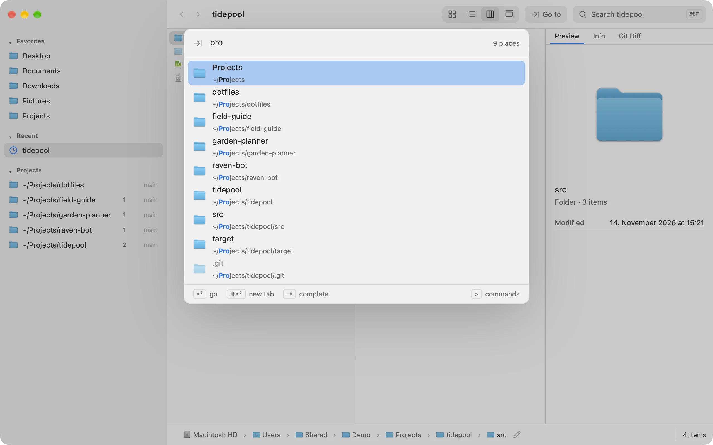
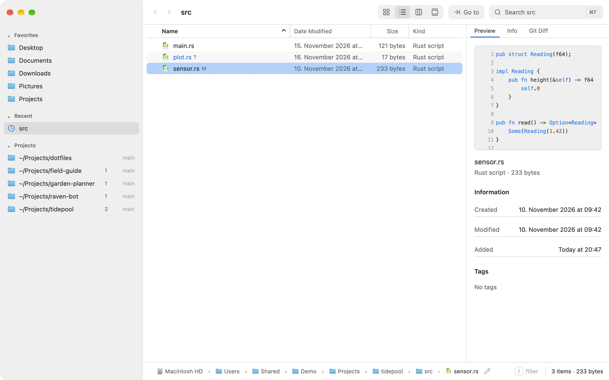
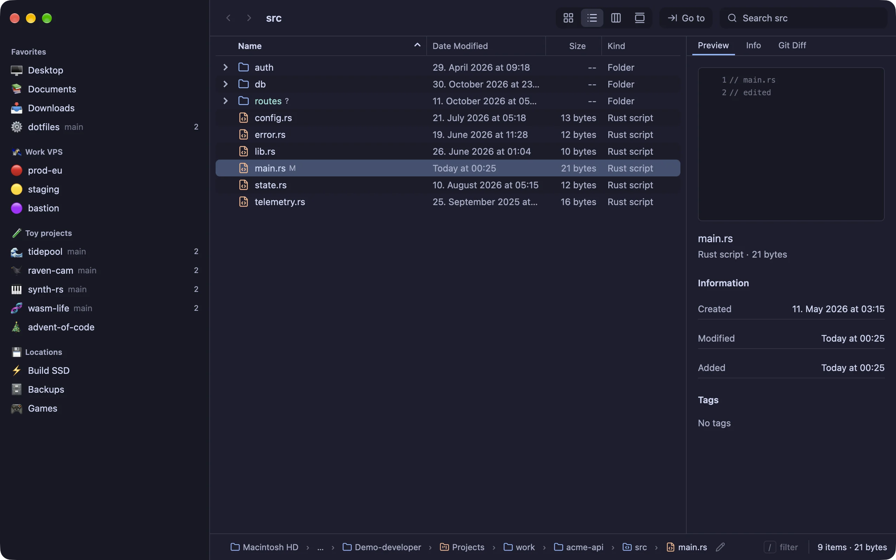
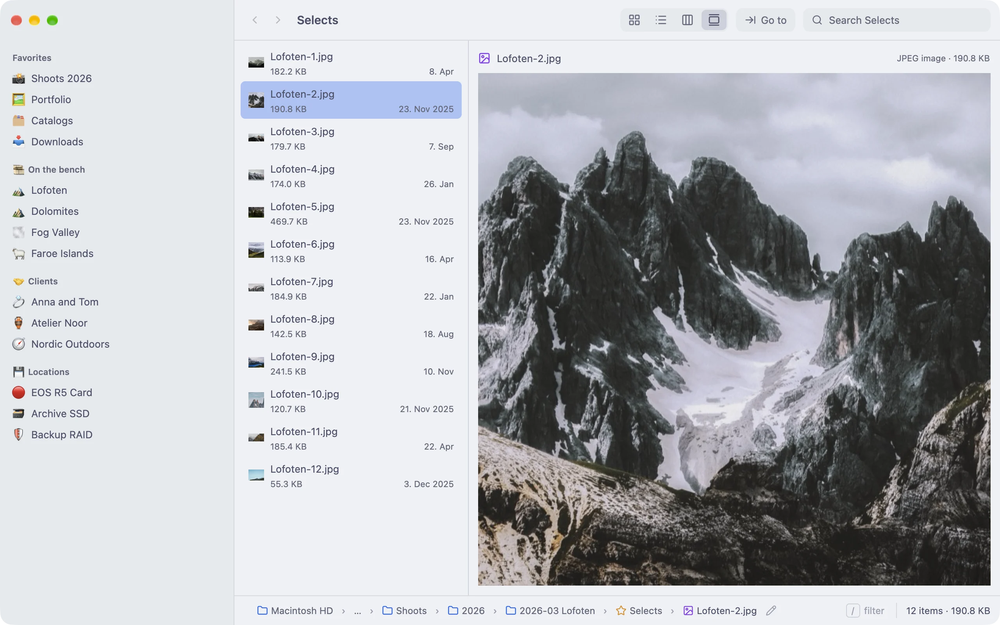
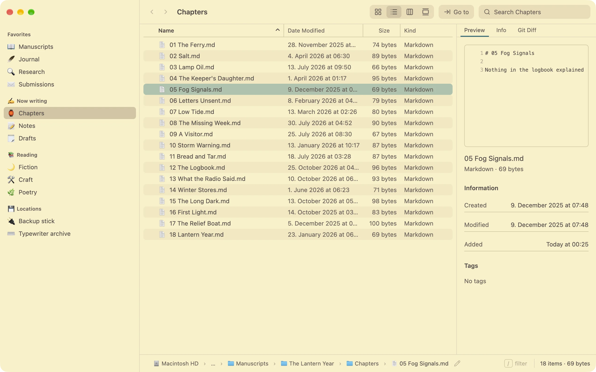
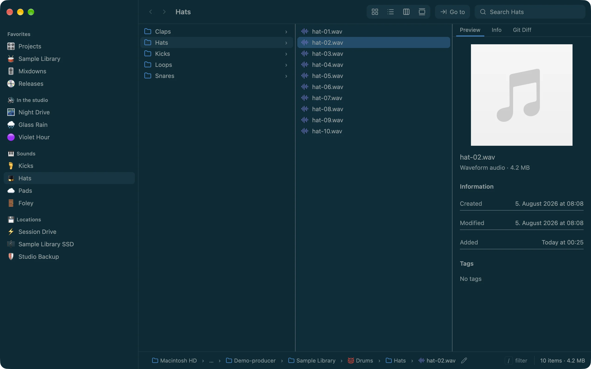
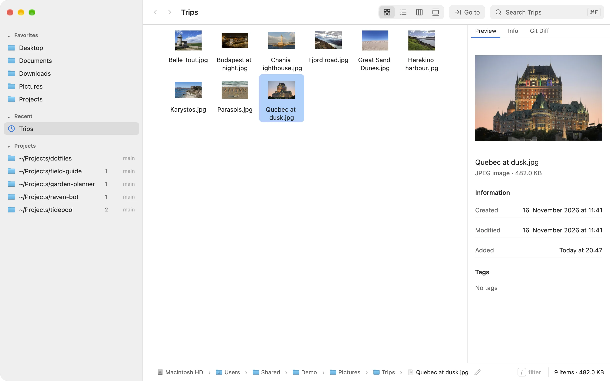

Everything you like about Finder. Nothing you’ve learned to put up with.
A file explorer for macOS, built in Rust on the GPU.
Download for Mac
brew install --cask paraversal/tap/crow

Keyboard first. Mouse welcome.
⌘KFolders, files, every command

⌘FNames and contents, as you type

- /Filter the folder you’re in
- ⌘LType a path, Tab completes it
node_modulestarget.gitSearch skips dev folders by default, and counts what it skipped- ⇧⌘ASearch past every skip rule
- ⌘JWhy does this folder look like this?
- hjklA Vim layer, with marks
- ⌘,Rebind any command
The things you stopped asking Finder for.
- New Fileright in the context menu
- Copiespause them; a conflict waits while the rest finishes
- Replacethe old file goes to the Trash, so ⌘Z brings it back
- Undoan older step from Activity, not just the last one
- Folder viewsrules you can read, not .DS_Store luck
- Terminalopens in the folder you’re looking at
- Customisablekeys, themes, icons and sidebar, down to the emoji
- Comparetwo files side by side in the gallery
Fast, and it stays fast.
- 100k
- files in one folder, no stutter
- 10ms
- to the first rows on screen
- 120fps
- scrolling on a ProMotion display
Your repos, right in the listing.
- M ?changed and new files, badged
- main 2branch and changes per project
- Git Diffstaged and unstaged, beside the file
- Optionala bundled plugin: approve it once, disable it any time in Settings ▸ Plugins
- Pluginswrite your own in Rhai

Make it yours.




Base24 themes from ~/.config/themes show up live. Icon packs, sidebar groups and emoji do the rest.
And all the Finder you know.

⌘1Icons 
⌘2List 
⌘3Columns ⌘4Gallery
Sidebar · Tabs · Quick Look · Finder tags · Trash by default · Spring-loaded folders · iCloud status · Drag and drop
Get Crow.
Download
The DMG from GitHub Releases. Crow isn’t notarized yet, so macOS asks once: how to open it.
Homebrew
Also puts the crow command on your PATH.
brew install --cask paraversal/tap/crow
From source
Rust stable and Xcode’s command line tools.
./scripts/fetch-gpui.sh ./scripts/bundle.sh --install